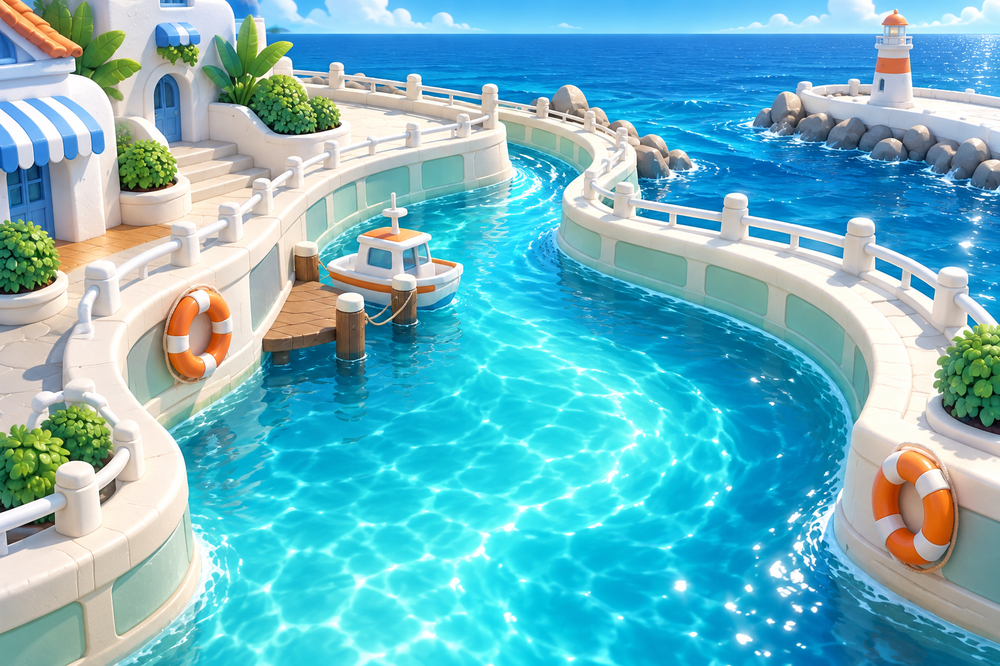
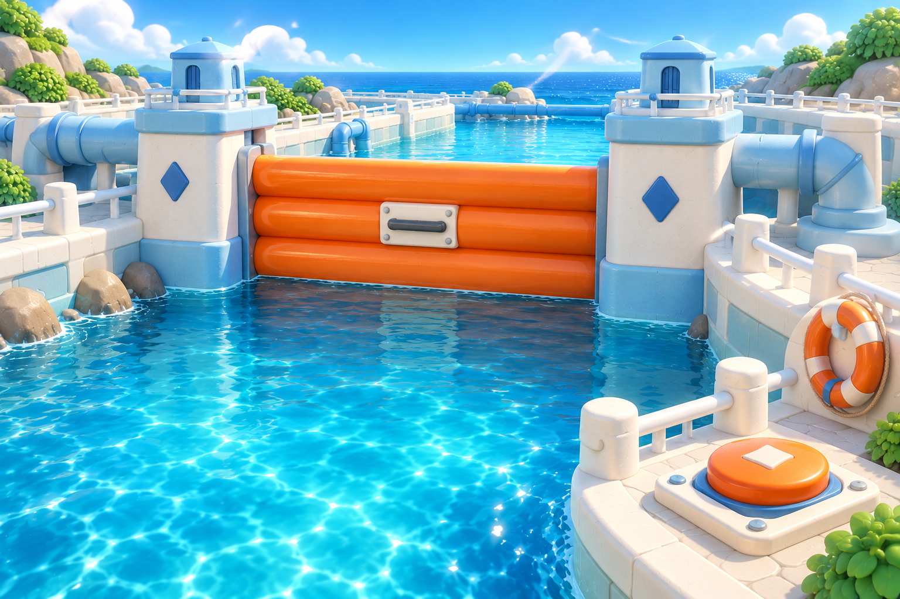
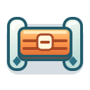
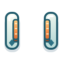
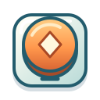
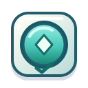

01 북항 수로
민트빛 산책로와 주황 구명튜브.
넓은 바다로 이어지는 익숙하고 밝은 출발점.

같은 상어와 같은 조작감, 눈에 보이는 새로운 물길.
아트 프리뷰 · 게임 적용 전
민트빛 산책로와 주황 구명튜브.
넓은 바다로 이어지는 익숙하고 밝은 출발점.

파란 구조물 사이로 열리고 닫히는 물길.
수문을 이용하는 새로운 구간의 시각적 예고.
수문의 빈 통로, 스위치의 높이와 표시를 함께 바꿉니다. 마름모는 연결된 장치를 알아보는 공통 표식입니다.

가로 셔터와 정지 표시.

같은 기둥, 열린 중앙 통로.

돌출된 버튼과 짧은 가로선.

눌린 버튼과 체크 표시.
위 버튼은 그림 상태를 비교하는 도구입니다. 스위치의 발동 시점·연결 규칙·충돌 판정은 구현 단계에서 정합니다.